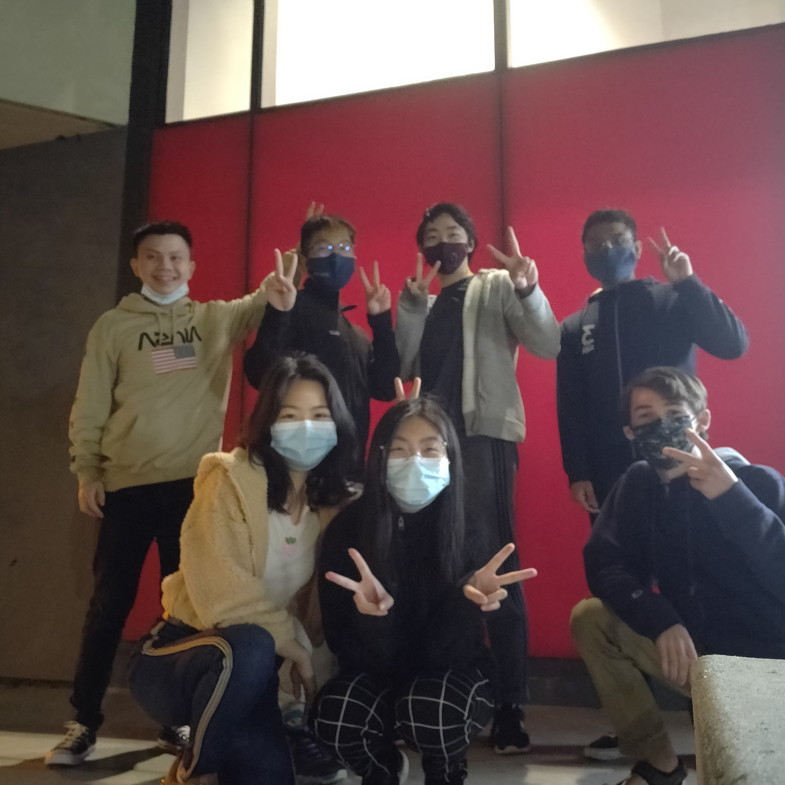

Day 1 (Saturday, 04/02/21)
On day 1, I did this.
Things I did today include:
- Eat
- Drink
- Sleep
One thing I wish I did today was watch Shrek. If you have never heard of Shrek, here is information and a video of Shrek:
Shrek
According to Wikipedia, Shrek is a fictional ogre character created by American author William Steig. Shrek is the protagonist of the book of the same name, a series of films by DreamWorks Animation, as well as a musical.
In all seriousness, though, I did not do too much today. I had breakfast with my ACM tree, which I have attached a picture of below. I also had a couple meetings, specifically:
- ACM AI Event Lead Standup
- ACM External Standup
Image of my tree:
Day 2 (Sunday, 04/03/21)
On day 2, I visited the beach and tide pools in La Jolla. The view and the weather were super nice, so this was definitely the highlight of my day. I loved that it didn't rain because the sound of rain lowkey stresses me out. For example, this sound would stress me out.
Here is an image I took at the tide pools:

In addition, a couple of friends and I formed a team for Clash. We were entered into a bracket of 8, hoping to win first place, but we were eliminated in the first match, so we forfeited and accepted 8th place. This was definitely a lowlight of the day.
Day 3 (Monday, 04/04/21)
On day 3, I pretty much did nothing. Why, you may ask? It's
because I had 0 lectures and
0 discussions today.
However, the highlight
of the day was hanging out with friends from an organization at UC
San Diego called ACM AI, which is an organization that
emphasizes artificial intelligence and
machine learning. Feel free to check learn more about ACM
AI by visiting the
ACM AI website!
Here is a picture we took when we hung out:

The low point of my day today was losing a bunch of games in League of Legends. If you are not sure what League of Legends is, feel free to check out this video: